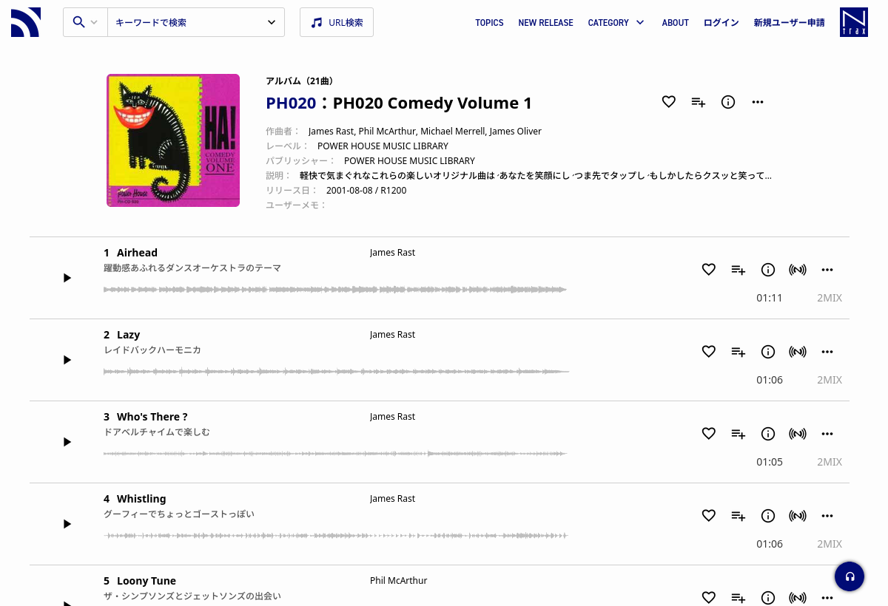

圖書館音樂研究所
音樂圖書館
使用公司
音樂圖書館
/
Power House
/
PH20 - Comedy Volume One
/ Tijuana
Tijuana - James Rast

大頭小狀元 第2季 第05集 氣球先生
大頭小狀元 第2季 第08集 牛乳大王
大頭小狀元 第2季 第13集 魔法彩妝師
大頭小狀元 第3季 第06集 戲中明珠(上)
YOYO小狀元 第1季 第03集 兒童書局
YOYO小狀元 第2季 第01集 木工童玩
YOYO小狀元 第2季 第12集 拔河教練
YOYO嘻遊記 第05季 第03集 台南之旅好豐富